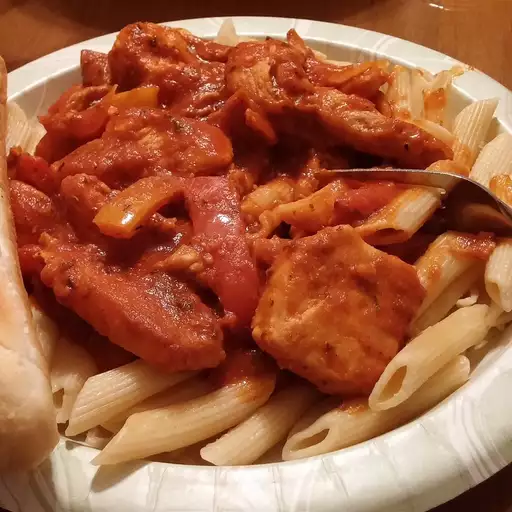

Rasta Pasta

Description
A delicious caribbean take on pasta, the spices and seasonings included will blow your mind!
Feel free to add your own twist with Jerk seasoning or other spices as your pallette desires.
Ingredients
- 1 pound penne pasta
- 2 tablespoons butter, divided
- 4 boneless, skinless chicken breasts, trimmed of fat and cut crosswise into 1/4-inch slices
- 2 tablespoons Cajun-style blackened seasoning
- 4 cloves garlic, chopped
- 1 large red onion, cut into wedges
- 1 green bell pepper, seeded and sliced into strips
- 1 red bell pepper, seeded and sliced into strips
- 1 yellow bell pepper, seeded and sliced into strips
- 1 teaspoon crushed red pepper flakes
- 1/4 teaspoon curry powder
- salt and pepper to taste
- 2 (24 ounce) jars meatless spaghetti sauce
Steps
- Bring a large pot of lightly salted water to a boil. Add pasta and cook until tender but still firm, about 8 minutes. Drain.
- Meanwhile, melt 1 tablespoon of butter in a wok or large skillet over medium-high heat. Add chick pieves; cook and stir until browned. Season with blackened seasoning, and remove the chicken from the wok and set aside.
- Melt the remaining butter in the wok over medium-high heat. Add the garlic and onion; cook and stir until fragrant and beginning to brown. Add the green, red and yellow pepper strips, and season with red pepper flakes, curry powder, salt and pepper. Cook and stir until the peppers are hot. Return the chicken to the wok and pour in the spaghetti sauce. Heat through and serve over pasta.